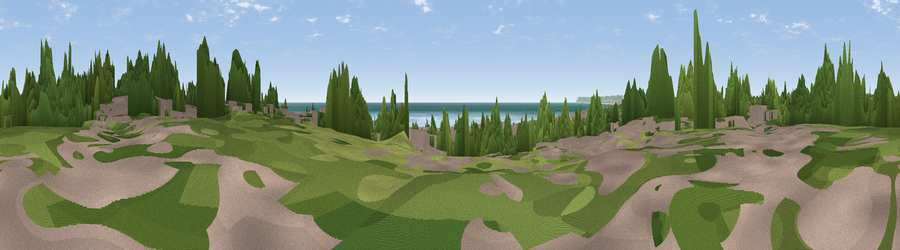

Viewpoint near Bexhill-on-Sea
#33610 in England · top 42% of its area beats it · near Bexhill-on-Sea · access?Where it is
The exact computed spot (TQ 74443 07113). Click the marker for map links.
Public access: no public right of way or access land is recorded at this exact spot — it may be on private land. Computed from Natural England's CRoW access layer and OpenStreetMap rights of way — not the legal definitive map. Always verify locally.
The view, rendered

A 360° render of this exact spot computed from the terrain model, tree cover and land cover — summer colours, afternoon light, calibrated against photographs of famous viewpoints. Real trees, hedges and buildings will differ in detail.
The panorama
Grey silhouette: terrain skyline in each direction (720 bearings, Earth curvature and refraction included). Dashed green: skyline with trees (+15 m) and buildings (+8 m) as obstacles. Blue strip: how far the ground is visible on each bearing.
Where the view opens
Wedge length = distance to the farthest visible ground on that bearing (vegetation-aware). Rings at 10, 25 and 50 km.
What fills the view
73% water · 16% built-up · 5% grassland · 3% woodland · 3% bare ground
Angular shares of the visible panorama (visual magnitude), not map area. Landscape diversity 0.38 (0–1 Shannon).
Key numbers
More beautiful places nearby
The staircase of upgrades: each row has a higher view potential than everything closer. Driving times are estimates from straight-line distance, calibrated against real road routing — check an actual route before setting out.
| Place | Direction | Drive | Score |
|---|---|---|---|
| Galley Hill | ENE · 2 km | ~4 min | 53.8 |
| Viewpoint near Crowhurst | NE · 4 km | ~9 min | 55.4 |
| Viewpoint near Crowhurst | NNE · 5 km | ~11 min | 56.4 |
| Viewpoint near Telham | NNE · 8 km | ~16 min | 62.2 |
| Viewpoint near Hastings | ENE · 8 km | ~16 min | 67.0 |
| Viewpoint near Hastings | ENE · 9 km | ~18 min | 70.5 |
| Viewpoint near Fairlight | ENE · 11 km | ~21 min | 72.3 |
| Viewpoint near Fairlight | ENE · 12 km | ~22 min | 76.7 |
50.83726, 0.47607 · source: osm viewpoint · position refined by local search. Computed location — check access rights before visiting.